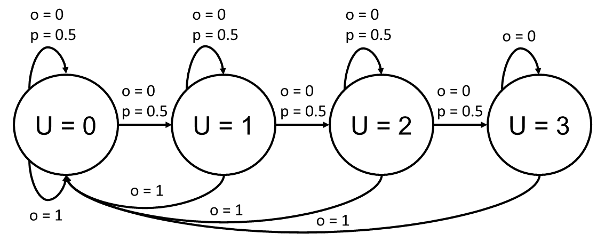

Modelling Examples#
In this section we will elaborate on tips & tricks for successful modelling of resource allocation problems. As we saw in the getting started section before, we need to define two groups of functions to model a resource allocation problem: logic functions and probabilistic functions. The logic functions are primarily used by the simulator, while the probabilistic functions are used for optimization purposes.
The Karma Game library offers various templates for functions to model a variety of resource allocation problems. However, it might be necessary for you to define your own functions, for this the templates can be used as a reference (you can also see the source code in the documentation).
In the following, we will discuss several aspects on modelling, as well as certain examples. For each function there is at least one example. When designing your own functions, it is important that you take exactly the given parameters (order, datatype, and name) and return exactly what is returned by the exemplary template functions (order, datatype).
In general, we also recommend the review of papers that used the game theoretic formalism of Karma games as inspiration for the modelling logic:
A self-contained karma economy for the dynamic allocation of common resources
Today me, tomorrow thee: Efficient resource allocation in competitive settings using karma games
Karma Priority lanes for fair and efficient bottleneck congestion management
Modelling of Logic Functions#
Cost Functions#
The cost function takes an urgency level (int) and an interaction outcome (int), and returns the cost (float) a participant has from this interaction outcome at a given urgency level. In the following you can see an example of the default template function:
def default(urgency:int, outcome:int) -> float:
"""
The default cost function. Outcome=0 means resource not received, therefore
costs created. Cost = urgency_level (urgency_level=0 has no costs)
"""
if(outcome==1):
return 0
else:
return urgency
Outcome Functions#
The outcome function takes a list of actions (int), and returns a list of outcomes (int) for each participant of an interaction. For example, if the interaction is a sealed bid auction, and the actions are bids, one could define the rule, that the highest bid wins. The outcomes could be coded as: 0 = not a winner, do not get resource, and 1 = the winner, do get a resource.
From a modelling perspective in economics, usually highest bid and second highest bid auctions are relevant, which is offered by our template library. In the following you can see an example of the template function and how an exemplary input and output could look like.
def highest_bid(actions: List[int]) -> List[int]:
"""
The highest bid (action) wins. Tiebreaker: random.
"""
highest_bid = max(actions)
highest_bid_participants = [x==highest_bid for x in actions]
winner = np.random.randint(0, sum(highest_bid_participants))
winner_idx = 0
for n in range(0, len(actions)):
if(highest_bid_participants[n]):
if(winner_idx==winner):
winner_idx = n
break
else:
winner_idx += 1
outcomes = []
for n in range(0,len(actions)):
if(not winner_idx == n):
outcomes.append(0)
else:
outcomes.append(1)
return outcomes
Demo Input This shows an example, where participant 0 bids 3 Karma units, and participant 1 bids 6 Karma units.
actions = [3,6]
Demo Output
This shows the exemplary output for the inputs and outcome functions above.
outcomes = [0, 1]
Payment Functions#
The payment function takes a list of actions (int) and a list of outcomes (int, from the outcome function), and returns a list of payments (int) and an Karma overflow (int). In case the bid is paid to society, it is stored in the Karma overflow, which is then distributed at the end of an epoch by the overflow distribution function. The produced payments are added to the participants Karma balances, which means payments are represented by negative integers, and receipts are represented by positive integers.
To stay with the example of the highest bid auction, the highest bid would need to be paid by the winner of the auction. It could now be possible, that the bid is received by the peer (if there are exactly two participants in an interaction), or that it is paid to the society (two cases we will discuss in the following). Our Template Library offers various functions, such as paying highest bid, paying second highest bid, paying difference between bids, or paying only one Karma unit. Please have a look in the documentation for more references.
def highest_bid_to_peer(actions: List[int], outcomes: List[int]) -> List[int]:
"""
The highest bid (action) is paid by the winner to the other peer.
Only for Karma Games with exactly two participants per interaction.
"""
if(len(actions)!=2):
raise Exception("This payment function is only compatible for exactly two participants!")
payments = []
highest_bid = max(actions)
for n in range(0, len(actions)):
if(outcomes[n]==1):
payments.append(-highest_bid)
else:
payments.append(+highest_bid)
overflow = 0
return payments, overflow
def highest_bid_to_society(actions: List[int], outcomes: List[int]) -> List[int]:
"""
The highest bid (action) is paid by the winner to the society (Karma overflow).
"""
payments = []
highest_bid = max(actions)
for n in range(0, len(actions)):
if(outcomes[n]==1):
payments.append(-highest_bid)
else:
payments.append(0)
overflow = +highest_bid
return payments, overflow
Demo Input This shows an example, where participant 0 bids 3 Karma units, and participant 1 bids 6 Karma units, and the outcomes for a highest bid auctions from the previous example.
actions = [3,6]
outcomes = [0, 1]
Demo Output
This shows the exemplary output for the inputs and outcome functions above.
# In case bid is paid to peer
payments = [+6, -6]
overflow = 0
# In case bid is paid to society
payments = [0, -6]
overflow = +6
Urgency Transition Functions#
The urgency transition function takes an agent type, previous urgency level, the outcome of an interaction and the set of possible urgencies. The urgency transition takes place at the end of each epoch. The outcome is encoded as: -1 if the agent didnt participate, and otherwise the maximum outcome of all interactions the agent has had during that epoch.
This function will most likely need to be modelled by the user, as this is very problem specific. Our template library only offers the random urgency transition from one to another urgency level, independent from interaction outcome or others.
In this example, we want to show you how you can model a urgency transition that is represented by a finite state machine, as in the figure below. Imagine an urgency process of not getting enough water. You might start with having enough water (U=0), and then if you get the resource (outcome o=1) you will alway be reset to this urgency level. If you dont get the resource (outcome o=0) you have a 50 % chance of staying at the current urgency level, and a 50% chance to move to a higher urgency state.
{kind=link}
def thirsty(atype: int, urgency: int, outcome: int, set_urgencies: Set) -> int:
if(outcome==-1 or outcome==0): # didnt participate interaction or did not receive the resource
if urgency==3:
urgency_next = 3
else:
if np.random.random()>0.5:
urgency_next = urgency + 1
else:
urgency_next = urgency
else: #if(outcome==1): # participated interaction, received the resource
urgency_next = 0 # reset to urgency level 0
return urgency_next
Overflow Distribution Functions#
The overflow distribution function takes the karma balances of the whole population (list of int) and the Karma overflow (int), and returns a new list of karma balances of the whole population. This function is used, if the payment function is designed to pay bids to the society, at the end of the epoch. It is particularly important to mention, that the game theoretical formalism assumes a constant level of Karma across the population, therefore if Karma overflow is populated by payment functions, it is necessary to distribute it with this function.
The template library offers various functions such as that a random individual receives the whole overflow, or a random group of individuals each receive one unit of the Karma overflow. In the following example you can see the two template functions.
def random_individual_all(pop_karmas: List[int], overflow: int) -> List[int]:
"""
This function distributes the whole Karma overflow to one randomly chosen
individual.
"""
pop_karmas_next = pop_karmas
overflow_receiver = np.random.randint(0, len(pop_karmas_next))
pop_karmas_next[overflow_receiver] += overflow
return pop_karmas_next
def random_group_each_one(pop_karmas: List[int], overflow: int) -> List[int]:
"""
This function distributes the Karma overflow randomly two n agents, where
each agent receives one unit of Karma.
"""
pop_karmas_next = pop_karmas
overflow_receivers = random.choice([x for x in range(0, len(pop_karmas))], size=overflow, replace=False)
for receiver in overflow_receivers:
pop_karmas_next[receiver] += 1
return pop_karmas_next
Karma Redistribution Functions#
The Karma redistribution function could be used to model a redistribution (e.g. taxes, maximum allowed Karma balance, etc.). It takes the karma balances of the whole population (list of int), and returns a new list of karma balances of the whole population. This function is used at the end of the epoch.
This can also be modelled by the user similarly to the previous function. Depending on the design, this can cause any level of complexity when modelling the probabilistic functions. In the template library, we leave it up to the user to design these functions, and solemnly offer “none”.
def none(pop_karmas: List[int]) -> List[int]:
"""
This function does not redistribute Karma.
"""
pop_karmas_next = pop_karmas
return pop_karmas_next
Modelling of Probabilisic Functions#
The modelling of the probabilistic functions is always from the perspective of one agent, as these functions are used to model the policy of one agent playing against others. The probabilistic functions always return a probability, float value between 0.0 and 1.0. Depending on the complexity of the Logic Functions, the modelling of the probabilstic funtions can be a difficult task, which is why it is important to use reasonable assumptions to facilitate the modelling.
Outcome Functions#
The probabilistic outcome function represents the probability of an outcome given a list of two actions, where the first action in the list represents the ego agents action and the second represents any other action of the participants.
To refer to the highest and second highest bid example we prepared templates in our library, they look like this:
def highest_bid(outcome: int, actions: List[int]) -> float:
"""
The highest bid (action) wins. Tiebreaker: random.
"""
action = actions[0]
other_action = actions[1]
if(action==other_action):
if(outcome==0):
return 0.5
elif(outcome==1):
return 0.5
elif(action>other_action):
if(outcome==0):
return 0.0
elif(outcome==1):
return 1.0
else:
if(outcome==0):
return 1.0
elif(outcome==1):
return 0.0
def second_highest_bid(outcome: int, actions: List[int]) -> float:
"""
The second highest bid (action) wins. Tiebreaker: random.
"""
action = actions[0]
other_action = actions[1]
if(action==other_action):
if(outcome==0):
return 0.5
elif(outcome==1):
return 0.5
elif(action>other_action):
if(outcome==0):
return 1.0
elif(outcome==1):
return 0.0
else:
if(outcome==0):
return 0.0
elif(outcome==1):
return 1.0
Karma Transition Functions#
The probabilistic Karma transition function represents the probability that the agent has karma_next after the epoch given a prior karma, an action and an outcome during the interaction of the epoch.
It is probably the most complex to model and therefore has various inputs (intermediate results of the optimization) that can be used during the optimization.
We show the example for no redistribution and highest bid to peer auctions, for the two cases pay bid to peer and pay bid to society.
Example pay highest bid to peer:
def _support_func_prob_karma_transition_highest_bid_to_peer_no_redistribution(karma_next: int,
karma: int, actions: List[int],
outcome: int) -> float:
action = actions[0]
other_action = actions[1]
if(outcome==1): # receive resource but loose karma
karma_next_fac = karma - action
if(karma_next==karma_next_fac):
return 1.0
if(outcome==0): # dont receive resource but gain karma
karma_next_fac = karma + other_action
if(karma_next==karma_next_fac):
return 1.0
return 0.0
def highest_bid_to_peer_no_redistribution(karma_next: int, karma: int, action: int, outcome: int,
state_mat: npt.NDArray, policy_mat: npt.NDArray,
game_parameters, gamma_mat: npt.NDArray,
v_mat: npt.NDArray) -> float:
"""
This function returns the probability to reach a karma_next balance given a karma,
action and outcome for the case that the highest bidding peer wins, pays the bid
to the peer, and there is no Karma redistribution.
"""
prob = 0
for other_action in game_parameters._set_actions:
prob += v_mat[other_action] * karma_game_library.templates.p_outcome.highest_bid(outcome, [action, other_action])
* _support_func_prob_karma_transition_highest_bid_to_peer_no_redistribution(karma_next, karma, [action, other_action], outcome)
if(gamma_mat[outcome][action] != 0):
prob = prob / gamma_mat[outcome][action]
return prob
Example pay highst bid to society: Important to mention here is a trick: one assumes that every agent in the population interacts on average exactly one time during an epoch.
def _support_func_average_highest_bid(parameters, gamma_mat: npt.NDArray, state_mat: npt.NDArray,
policy_mat: npt.NDArray) -> float:
average_bid = 0
for atype in parameters._set_types:
for urgency in parameters._set_urgencies:
for karma in parameters._set_state_karmas:
for action in parameters._set_actions:
average_bid += state_mat[atype][urgency][karma]
* policy_mat[atype][urgency][karma][action]
* gamma_mat[1][action] * action
return average_bid
def highest_bid_to_society_no_redistribution(karma_next: int, karma: int, action: int, outcome: int,
state_mat: npt.NDArray, policy_mat: npt.NDArray,
game_parameters, gamma_mat: npt.NDArray,
v_mat: npt.NDArray) -> float:
"""
This function returns the probability to reach a karma_next balance given a karma,
action and outcome for the case that the highest bidding peer wins, pays the bid
to the society (Karma overflow), and there is no Karma redistribution.
"""
average_bid = _support_func_average_highest_bid(game_parameters, gamma_mat, state_mat, policy_mat)
lower_av_bid = np.floor(average_bid)
higher_av_bid = np.ceil(average_bid)
if((higher_av_bid - lower_av_bid)==0):
fraction = 0.5
else:
fraction = (average_bid - lower_av_bid) / (higher_av_bid - lower_av_bid)
if(outcome==1):
if(karma_next == karma - action + lower_av_bid):
return 1-fraction
elif(karma_next == karma - action + higher_av_bid):
return fraction
if(outcome==0):
if(karma_next == karma + lower_av_bid):
return 1-fraction
elif(karma_next == karma + higher_av_bid):
return fraction
return 0
Urgency Transition Functions#
The probabilistic Urgency transition function represents the probability that the agent has urgency_next after the epoch given a prior urgency, and an outcome during the interaction of the epoch. The outcome is encoded similar to as defined in the Logic, outcome function.
For example a random urgency transition could look like this:
def random(urgency_next: int, urgency: int, outcome: int, atype: int, set_urgencies: Set) -> float:
"""
This function assumes that the transition probability from one urgency level to another is random.
It is completely independent from the agent type, urgency, and interaction outcome.
"""
return 1/len(set_urgencies)
A urgency transition suitable to the thirsty example above could look like this:
def thirsty(urgency_next: int, urgency: int, outcome: int, atype: int, set_urgencies: Set) -> float:
if outcome==1:
if urgency_next==0:
return 1.0
else:
return 0.0
else:
if urgency == 3 and urgency_next == 3:
return 1.0
elif urgency_next = urgency+1:
return 0.5
elif urgency_next = urgency:
return 0.5
else:
return 0.0